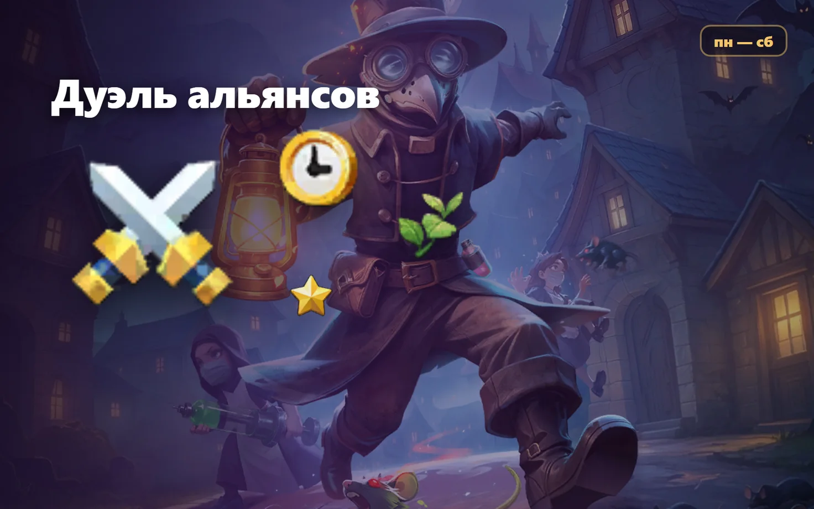
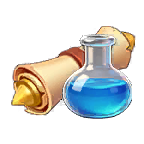
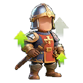
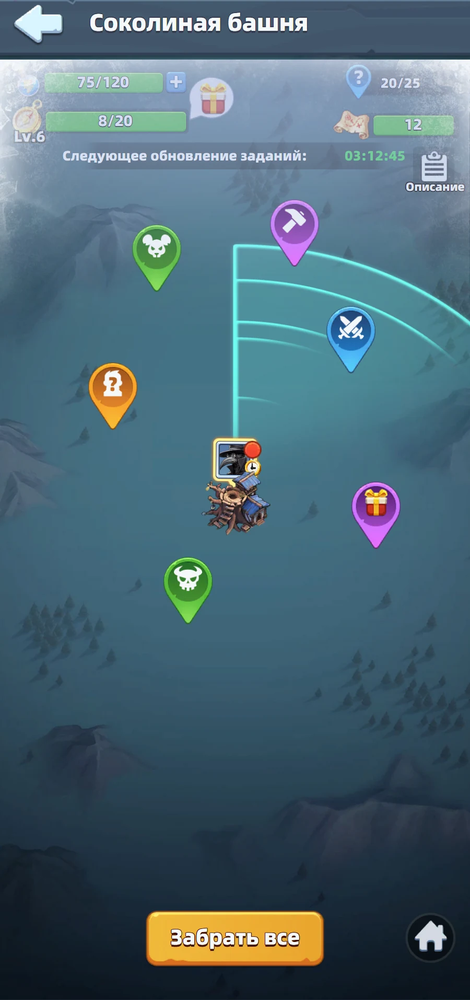
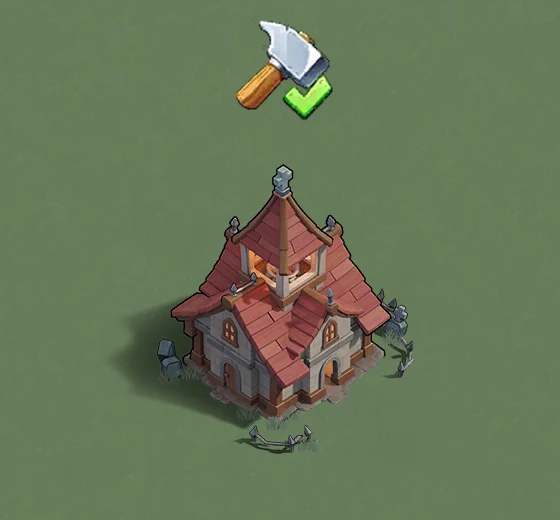

Дуэль альянсов
Дуэль альянсовДуэль альянсов: что делать в каждый день
Каждую неделю наш альянс соревнуется с другим альянсом. Шесть дней — шесть тем. Очки дают только дела темы этого дня. Кто копит заранее и тратит в свой день — тот побеждает.

Где кнопка
Справа на главном экране — значок со скрещёнными мечами. Нажми — откроются задания дня и сундуки.
Новый день Дуэли
По Москве (00:00 в игре). Перед большой тратой глянь таймер в окне Дуэли.

Пн, Ср, Пт — сокол
Задание сокола в эти дни = 13 000 очков. В остальные дни его выполняют, но награду не забирают.
Кто участвует
Альянсы от 20 человек из топ-32 сервера по мощи. Сменил альянс — в этот день очки альянсу не идут.
Нажми на день — увидишь, что делать
Сегодняшний день открыт сам (по времени игры). Очки в таблицах — как написано в самой игре, до бонуса исследований Дуэли.
Понедельник — «Ворон»
Забери все задания сокола, которые копил
Открой Башню сокола (птица слева внизу на главном экране) и нажми «Забрать» у всех выполненных заданий. Каждое — 13 000 очков.
Задание сокола — 13 000Скорми Ворону вороньи плоды и эссенцию
Гнездо ворона → первая вкладка. Тратишь всё, что копил неделю. Сундуки с эпиграфами тоже открывай сегодня.
 Воронья эссенция — 2 500
Воронья эссенция — 2 500 1 вороний плод — 3
1 вороний плод — 3 Сундук с эпиграфами — 3 100
Сундук с эпиграфами — 3 100Трать энергию
Бей скверну на карте и ходи в штурмы — каждая единица энергии даёт 150 очков. Не забудь выпить два бесплатных флакона энергии.
 1 энергия — 150
1 энергия — 150Все свободные отряды — на сбор ресурсов
Ресурсы засчитываются, когда отряд вернулся домой, а не когда собрал. Ресурсы из сундуков и мешков не идут.
 660 противоядия: 1 очко — трать, только если не хватает до сундука
660 противоядия: 1 очко — трать, только если не хватает до сундука
Не открывай сундуки снаряжения Ворона — их день среда.

Перед сном отправь отряды так, чтобы они вернулись до 05:00 по Москве вторника — иначе ресурсы уйдут уже в другой день.
Вторник — «Развитие территории» (стройка)
Возьми титул министра стройки
Если король раздаёт титулы — попроси «министра строительства» до того, как жмёшь стройки. Титул действует только на стройки, начатые после его получения.
Нажми молотки над готовыми зданиями
Все стройки, которые ты держал готовыми (см. «держать молоток» ниже), — забирай сейчас.
 +1 мощь здания — 10
+1 мощь здания — 10Трать ускорения стройки
Каждая минута ускорения — 65 очков. Универсальные ускорения лучше оставить на среду или пятницу.
 1 минута ускорения стройки — 65
1 минута ускорения стройки — 65Отправь золотой караван и золотую секретную операцию
Это самые жирные очки дня: золотой (UR) караван — 100 000, золотая операция — 75 000. Обнови их до золотых билетами обновления.
 Отправить UR (золотой) караван — 100 000
Отправить UR (золотой) караван — 100 000 Провести UR секретную операцию — 75 000
Провести UR секретную операцию — 75 000Найми выживших в Таверне
Вкладка выживших, все билеты, которые копил. По 1 500 очков за найм.
 Найм выжившего — 1 500
Найм выжившего — 1 500 Фрагмент пробуждения оружия — 10 000
Фрагмент пробуждения оружия — 10 000Задания сокола сегодня выполняй, но награду не забирай — заберёшь в среду.
Среда — «Технологии» (исследования)
Возьми титул министра развития
Он ускоряет исследования. Сначала титул — потом жми исследования.
Открой все сундуки снаряжения Ворона
Каждый сундук 1 уровня — 1 100 очков, сундуки выше уровнем дают намного больше. Их копили всю неделю именно для этого.
Заверши исследования и трать ускорения исследований
По 65 очков за минуту. Свитки обучения — по 300 за штуку: вкладывай их в ветку «Дуэль альянсов».
1 минута ускорения исследований — 65
1 свиток обучения — 300 +1 мощь технологий — 10
+1 мощь технологий — 10Забери задания сокола
Все, что копил со вторника.
Задание сокола — 13 000
Не трать фрагменты героев, противоядие и билеты найма — это завтра.
Четверг — «Развитие героев»
Найми героев в Таверне
Все билеты найма, которые копил неделю. Каждый найм — 1 950 очков.
Найм героя один раз — 1 950Вложи все фрагменты в звёзды
Сначала фрагменты конкретного героя (с его лицом), потом универсальные. Каждый золотой фрагмент — 10 000 очков. Универсальные тоже считаются.
 1 фрагмент UR (золотого) героя — 10 0001 фрагмент SSR (фиолетового) героя — 3 5001 фрагмент SR (синего) героя — 1 000
1 фрагмент UR (золотого) героя — 10 0001 фрагмент SSR (фиолетового) героя — 3 5001 фрагмент SR (синего) героя — 1 000Прокачай уровни противоядием и навыки значками
Противоядие лучше тратить в 4-часовой раунд «Усиление героев» Битвы на выживание — очки пойдут в оба события.
660 противоядия — 1Используй фрагменты пробуждения
Если у тебя есть Марлена, Синтия или Энни на 10 звёздах.
Фрагмент пробуждения героя — 10 000
Подготовь пятницу: поставь обучение солдат на 1–3 уровня ниже твоего максимума без ускорений. Завтра будешь их повышать — за это дают очки. Задания сокола сегодня не забирай.
Пятница — «Подготовка к войне» (войска)
Возьми титул министра войны
Он ускоряет обучение войск.
Повышай солдат, которых обучил вчера, и трать ускорения обучения
Очки дают и за начало обучения или повышения, и за его окончание. Солдат — 80 очков, минута ускорения — 65.

Обучить 1 солдата — 801 минута ускорения обучения — 65Забери задания сокола
Все, что копил с четверга.
Задание сокола — 13 000Если не хватает — добери стройкой и исследованиями
Сегодня они тоже дают очки. Хватило войсками — оставь готовые здания на следующий вторник.
Ускорения стройки и исследований — 65 / мин
Перед сном: включи щит и убери отряд со стены (в Стенах у отряда выключи «Присоединиться к обороне»). Завтра день набега, и щит может кончиться.
Суббота — «Набег» на альянс-соперник
Весь день (24 часа) можно бить альянс, с которым у нас Дуэль. За их солдат дают в 5 раз больше очков, чем за чужих.
Щит до 05:00 по Москве
Есть 5 бесплатных щитов по 8 часов. Держи щит, пока не закончится день — до воскресенья 05:00 МСК.
Отряды — домой
Щит не защищает отряды на карте.
Убери отряд со стены
В Стенах у отряда выключи «Присоединиться к обороне» — если щит слетит, потеряешь меньше.
Набирай очки без драки
Золотой караван, золотая секретная операция, ускорения лечения, стройки, исследований и обучения.
UR караван — 100 000UR секретная операция — 75 000 1 минута ускорения лечения — 65
1 минута ускорения лечения — 65 Ускорения стройки, исследований, обучения — 65 / мин
Ускорения стройки, исследований, обучения — 65 / минБей альянс-соперника
Нажми «Перейти» в окне Дуэли — игра покажет вражеский альянс и перенесёт тебя к нему (между серверами переезд бесплатный). Бей вместе с альянсом. Вернуться — кнопка «Вернуться» (синяя стрелка сверху), город встанет у точки сбора альянса.
 Побеждённый солдат соперника по Дуэли — 40
Побеждённый солдат соперника по Дуэли — 40 Любой побеждённый солдат / твой павший солдат — 8
Любой побеждённый солдат / твой павший солдат — 8
Суббота — ещё и КвК. Бой за трон в 17:00 по Москве. Ускорения лечения нужны и там — не сжигай всё утром.
Воскресенье — отдых, готовимся к неделе
Ни ускорения, ни фрагменты, ни сундуки — всё это даст очки в свой день.
Заберёшь в понедельник.
Так, чтобы они вернулись уже после 05:00 по Москве в понедельник — сбор засчитается в день Ворона.
Те, что идут больше суток и закончатся ко вторнику или среде. Молоток не жми.
Как копить: два приёма, которые выигрывают Дуэль

Соколиная башня: цветные метки — задания сокола.
«Сохранять» задания сокола — что это и как
Задания сокола — короткие задания из Соколиной башни: на её карте они висят цветными метками (череп — бить скверну, рука — помочь союзнику, подарок — забрать награду и т. д.). Выполнил — метка ждёт, пока не нажмёшь «Забрать все».
«Сохранить» значит: выполнить задание, но НЕ нажимать «Забрать». Выполненное задание висит в башне «в ожидании». Ты забираешь его в нужный день — и только тогда игра даёт очки Дуэли.
- В воскресенье, вторник и четверг выполняешь задания сокола и не забираешь награду.
- В понедельник, среду и пятницу заходишь в башню и забираешь всё — каждое по 13 000 очков.
- В субботу выполняешь и забираешь сразу.
Если лимит забит, новые задания не появятся — лишние лучше забрать, чтобы не пропадали.

Молоток над зданием — стройка готова, но не засчитана.
«Держать молоток» — что это и как
Когда стройка заканчивается, над зданием появляется молоток. Пока ты его не нажал, улучшение не засчитано.
Очки Дуэли дают за нажатие на молоток, а не за конец стройки. Поэтому:
- Начни долгую стройку заранее (в воскресенье или понедельник).
- Стройка закончилась — не нажимай молоток. Очередь стройки при этом освобождается, можно строить дальше.
- Во вторник (день стройки) нажми все молотки — получишь очки за всё сразу.
С исследованиями то же самое: готовое исследование забирай в среду или пятницу.
Что копить всю неделю и когда тратить

Совмещай Дуэль с Битвой на выживание
Битва на выживание идёт каждый день. Сутки поделены на раунды по 4 часа, у каждого своя тема: «Усиление Ворона», «Усиление героев», «Развитие владений», «Обучение войск», «Исследование технологий». Кнопка — в «Особых событиях» справа вверху.
Если тратить вещи дня Дуэли в тот 4-часовой раунд, где тема совпадает, очки идут сразу в два события.
Пример: в понедельник день Ворона. Открой Битву на выживание, посмотри, во сколько начнётся раунд «Усиление Ворона», — и корми Ворона именно тогда.

Осторожно: если каждый день выполнять все задания Битвы на выживание без разбора, на Дуэль ничего не останется. Сначала Дуэль, а Битву подстраивай под неё.
Исследования Дуэли — сделай это первым делом
В Лаборатории есть ветка «Дуэль альянсов». Она открывается на Лаборатории 15 уровня и качается свитками обучения. Без неё ты получаешь только первые 3 сундука из 9.
Стоит около 100 свитков. Каждая следующая Дуэль сразу платит больше.
Около 450 свитков.
Он увеличивает все очки Дуэли, кроме покупок за алмазы; на максимуме — вдвое. Около 3 800 свитков.
Отдельные узлы: «Очки Сокола», «Очки ускорения», «Очки найма», «Очки строительства», «Очки технологий», «Очки обучения», «Очки убийств», «Очки торговли каравана», «Очки тайных операций», «Очки найма выживших».

Здание «Исследовательская лаборатория» → плитка «Дуэль альянсов» (третий ряд, посередине). Названия узлов — как в игре.
Свитки обучения дают сундуки самой Дуэли — получается круг: больше исследований → больше очков → больше сундуков → больше свитков.
Как вести альянс в Дуэли

План в воскресенье
Выложи в объявление альянса, что копить и когда тратить (таблица выше). Новички без этого жгут ускорения не в тот день.
Не обязательно выиграть все дни
Каждый день даёт свои победные очки. Если день без шансов — пусть все копят на следующий, а не сливают запасы.
Проверь исследования у всех
Кто ниже Лаборатории 15 или без узлов сундуков — помоги ускорениями помощи альянса.